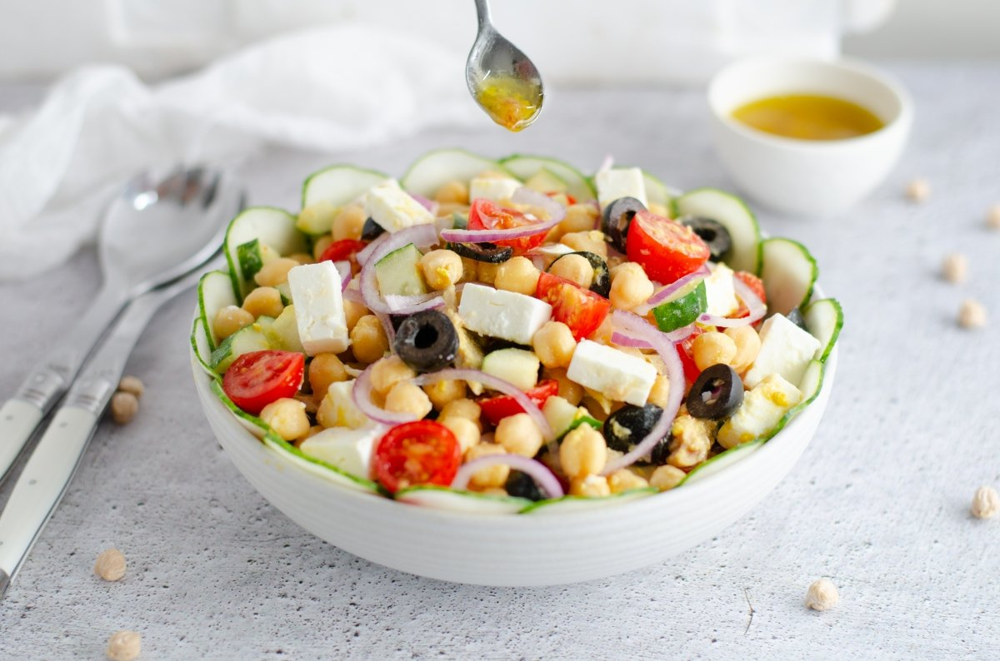
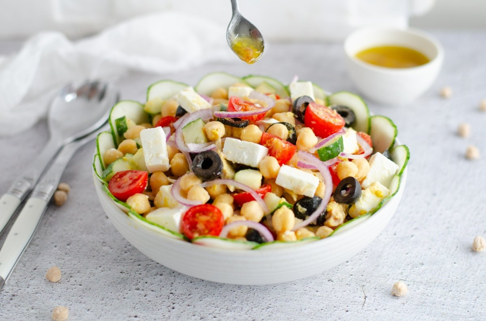

Información de Contacto
Email: jose.lozano2487@alumnos.udg.mx
oswaldo.ruiz2380@alumnos.udg.mx
Tel 3311967056
Tel 3337178276
Email: jose.lozano2487@alumnos.udg.mx
oswaldo.ruiz2380@alumnos.udg.mx
Tel 3311967056
Tel 3337178276
Tener una buena alimentación significa consumir una dieta equilibrada que aporte los nutrientes esenciales para el correcto funcionamiento del cuerpo
Las proteinas son los nutrientes que desempeñan un mayor numero de funciones en las celulas de todos los seres vivos. Forman parte de la estructura de los tejidos y por otro lado tienen funcion metabolica y reguladora

Tener el tiempo justo o no ser experta en la cocina no tiene por que ser sinonimo de "Fast Food" y otras tentaciones cargadas de calorias, sobre todo si tu objetivo es bajar de peso
Comer Platillos valanceados y con la suficiente energia para
 
